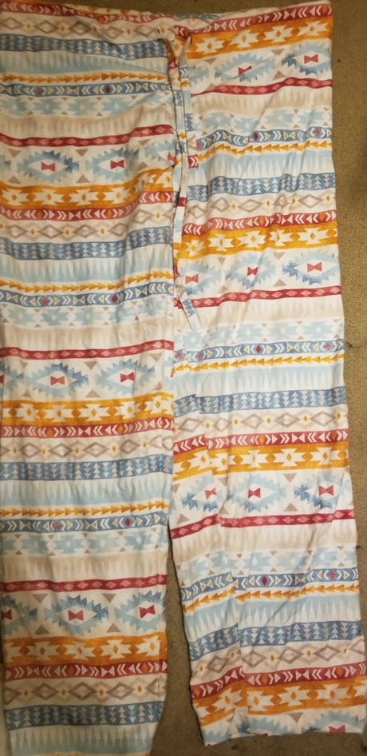

For this rotation, the project was to sew a pair of pants. I chose a paterned fabric, so the hardest part was getting the parernts to match up. I also had a few mishaps with the sewing machine, but none too disastrous. My biggest mistake was probably buring myself on one of the irons.
